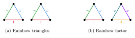
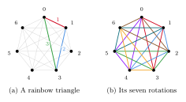
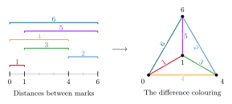
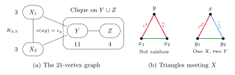

5 General rainbow spanning structures
In 1986 Hahn and Thomassen conjectured that there is a constant $\alpha>0$ such that every colouring of $K_n$ in which each colour is used at most $\alpha n$ times contains a rainbow Hamilton cycle. Albert, Frieze and Reed proved this (Section 4.1). Frieze and Krivelevich then conjectured in 2008 that the same holds for every spanning tree of bounded maximum degree (see [255]). Both questions are cases of a single one: which spanning graphs $H$ have a rainbow copy in every colouring of a given host with small colour classes? This chapter is about that question and its variants.
The first restriction comes from counting. A rainbow copy of $H$ needs $e(H)$ colours. A proper colouring of $K_n$ may use only $n-1$ colours, so properness alone cannot give a rainbow spanning graph with more than $n-1$ edges. We therefore bound the sizes of the colour classes, or weaken what we ask of $H$.
The simplest spanning targets are factors. For a fixed graph $F$, an $F$-factor is a collection of vertex-disjoint copies of $F$ covering all vertices. In a rainbow $F$-factor all edges have distinct colours. In a tiling by rainbow copies of $F$ each copy is rainbow, but a colour may be used once in each of several copies. Figure 20 shows the difference for triangles.

5.1 Proper colourings
Let $6\mid n$ and colour $K_n$ by a $1$-factorisation. This proper colouring has $n-1$ colours, while a triangle-factor has $n$ edges, so no triangle-factor is rainbow. Every triangle in it is rainbow, however, so the obstruction says nothing about tilings. Yuster [273] showed that for tilings properness is enough, under the minimum-degree condition that Alon and Yuster proved for uncoloured $F$-factors.
For every fixed graph $F$ with at least one edge there is a constant $C=C(F)$ with the following property. If $v(F)$ divides $n$ and $G$ is an $n$-vertex graph with \[ \delta(G)\geq \left(1-\frac{1}{\chi(F)}\right)n+C, \] then every proper edge-colouring of $G$ contains a spanning tiling by rainbow copies of $F$.
For triangles there is nothing to colour-check, since every triangle is rainbow in a proper colouring. For $K_4$ it is different: the two disjoint edges of a $4$-cycle in $K_4$ may share a colour.
Can one ask for a rainbow factor if one more colour is available? Müyesser [223] arrived at this question from the cycle types of orthomorphisms. The Friedlander–Gordon–Tannenbaum conjecture (Section 2.4) asks for an orthomorphism of a group whose non-identity elements lie in cycles of length $k$. After proving it for large groups, Müyesser proposed a version of the case $k=3$ for arbitrary proper colourings, just as Ryser's conjecture (Conjecture 2.9) is the version of the Hall–Paige theorem for arbitrary Latin squares.
There is an absolute constant $C$ such that every complete graph $K_n$ properly coloured with $n$ colours contains a rainbow union of vertex-disjoint triangles covering all but at most $C$ vertices.
The Rödl nibble gives a rainbow triangle packing leaving at most $n^{1-\varepsilon}$ vertices uncovered, for some fixed $\varepsilon>0$. Müyesser suggests a polylogarithmic number of uncovered vertices as the next step. For partial transversals of Latin squares the analogous progress is complete: from $n-O(\log n/\log\log n)$ cells (Theorem 2.20) to $n-1$ cells (Theorem 2.21). He knows no example ruling out $C=2$.
5.2 Locally bounded colourings
From now on we bound the colour classes. A colouring is globally $k$-bounded if every colour is used at most $k$ times, and locally $k$-bounded if every colour is used at most $k$ times at each vertex. A rainbow copy of $H$ in a host $G$ needs $e(H)$ colours, so a globally bounded colouring of $G$ can be forced to contain one only if the bound is at most $e(G)/e(H)$. Ehard, Glock and Joos [117] showed that a bound just below this suffices for every bounded-degree spanning $H$, if each colour also has bounded degree and the host is quasirandom.
For disjoint vertex sets $S,T$, write $e_G(S,T)$ for the number of edges between them. An $n$-vertex graph $G$ is $(\varepsilon,d)$-quasirandom if every vertex has degree $(d\pm\varepsilon)n$ and \[ e_G(S,T)=(d\pm\varepsilon)|S||T| \] whenever $S,T$ are disjoint and $|S|,|T|\geq\varepsilon n$. The complete graph is $(\varepsilon,1)$-quasirandom, and the random graph $G(n,d)$ is $(\varepsilon,d)$-quasirandom with high probability.
For all $d\in(0,1]$, $\gamma\in(0,1)$ and integers $\Delta,\Lambda\geq1$, there are $\varepsilon>0$ and $n_0$ such that the following holds for $n\geq n_0$. Let $G$ be an $(\varepsilon,d)$-quasirandom graph on $n$ vertices and let $H$ have $n$ vertices, at least one edge and maximum degree at most $\Delta$. Every locally $\Lambda$-bounded, globally $(1-\gamma)e(G)/e(H)$-bounded colouring of $G$ contains a rainbow copy of $H$.
In $K_n$, a triangle-factor may therefore have colour classes of size about $(1-\gamma)n/2$, and a $\Delta$-regular spanning graph colour classes of size about $(1-\gamma)n/\Delta$. Up to the factor $1-\gamma$, these are the largest classes for which a rainbow copy can be forced. The proof uses a rainbow version of the blow-up lemma, extending one of Glock and Joos [136].
For triangle-factors the local bound need not be constant. Kim, Kühn, Kupavskii and Osthus [178] allow up to $\eta n/\log^4 n$ edges of a colour at each vertex; we state their theorem in Section 5.7.
Rainbow copies also give decompositions, as for Ringel's conjecture in Section 3.5. Let a group $\Gamma$ act on the vertices of $G$, and colour each edge by its orbit under $\Gamma$. If every orbit has $|\Gamma|$ edges, then the images of a rainbow copy of $H$ under $\Gamma$ are edge-disjoint [117]. For $K_{2n+1}$ and the rotations of $\mathbb{Z}_{2n+1}$, the orbits are the near-distance classes. A rainbow copy of a graph with $n$ edges therefore gives a cyclic decomposition of $K_{2n+1}$, formed by the $2n+1$ rotations of one copy (Figure 21). Kotzig conjectured in 1973 that every tree with $n$ edges has a cyclic decomposition of $K_{2n+1}$ [117]. The proof of Theorem 3.14 finds a rainbow copy in the near-distance colouring, so it gives this for large $n$. The divisibility conditions behind Kotzig's conjecture do not use that $T$ is a tree, and Ehard, Glock and Joos proposed the following.
For every integer $\Delta\geq1$ there is $n_0$ such that, for all $n\geq n_0$, every graph $H$ with $n$ edges and maximum degree at most $\Delta$ has a cyclic decomposition of $K_{2n+1}$ into copies of $H$.

Their evidence is an approximate version. For every $\Delta$ there is $\varepsilon>0$ such that, for large $n$, every graph with at most $n$ vertices, maximum degree at most $\Delta$ and at most $(1-\varepsilon)n/2$ edges has a cyclic packing in $K_n$. That is, the $n$ rotations of one copy are edge-disjoint. This is Theorem 5.3 applied to the orbit colouring, which is locally $2$-bounded and has colour classes of size $n$. In $K_{2n+1}$ it handles graphs with $(1-\varepsilon)n$ edges, so Conjecture 5.4 asks for the last $\varepsilon n$ edges, with no slack left. For trees this last step needed the methods behind Theorem 3.14; for bounded-degree graphs with cycles it is open.
5.3 Golomb rulers and Sidon sets
Section 3.5 coloured the edge $ab$ of the complete graph on $\{0,1,\dots,N\}$ by $|a-b|$. A graceful labelling of a tree is a rainbow spanning tree in this colouring. Rainbow cliques in the same colouring are a classical object as well.
A Golomb ruler is a set of integer marks such that no two pairs of marks are the same distance apart. For example, the marks $0,1,4,6$ measure each of the distances $1,\dots,6$ exactly once. A set of marks in $\{0,\dots,N\}$ is a Golomb ruler exactly when it spans a rainbow clique in the difference colouring (Figure 22). The problem of the shortest ruler with $k$ marks is therefore to find the least $N$ for which this colouring contains a rainbow $K_k$.

In additive combinatorics these sets are called Sidon sets: a set of integers is Sidon if all sums $a+b$ with $a\leq b$ are distinct. Since $a+b=c+d$ is the same as $a-c=d-b$, a set is Sidon exactly when its positive differences are distinct. Erdős and Turán [119] showed that a Sidon subset of $\{0,\dots,N\}$ has at most $(1+o(1))\sqrt N$ elements, and Singer's construction [250] gives Sidon sets of this size. So the largest rainbow clique in the difference colouring of $K_{N+1}$ has order $(1+o(1))\sqrt N$.
How does this compare with arbitrary colourings? The difference colouring is not proper, but it is locally $2$-bounded: at the vertex $a$, the colour $d$ appears only on the edges to $a-d$ and $a+d$. Babai [39] asked how large a rainbow clique every proper colouring of $K_N$ contains. Alon, Lefmann and Rödl [27] showed that the answer is of order $(N\log N)^{1/3}$. Alon, Jiang, Miller and Pritikin [25] extended this to locally $m$-bounded colourings. They showed that every locally $m$-bounded colouring of $K_N$ contains a rainbow $K_t$ if $N\geq Cmt^3/\log t$, and that this is tight up to the constant $C$. For fixed $m$ the guaranteed clique again has order $(N\log N)^{1/3}$.
The difference colouring is therefore far from the worst case. Its additive structure gives rainbow cliques of order $\sqrt N$, much more than the $(N\log N)^{1/3}$ guaranteed by local boundedness alone.
5.4 Globally bounded colourings
We return to the Frieze–Krivelevich question. It asks for a rainbow $H$ under a global bound alone, with no condition at the vertices. Sudakov and Volec [255] showed that the bound must be smaller than $n/\Delta^2$ by a constant factor. For every even $\Delta$ and every $n$ divisible by $\Delta/2+1$, they gave an $n$-vertex graph $H$ of maximum degree $\Delta$ and a globally $16n/\Delta^2$-bounded colouring of $K_n$ with no rainbow copy of $H$. Böttcher, Kohayakawa and Procacci [59] had already proved that this order is enough. Their theorem settled the Frieze–Krivelevich conjecture for all spanning graphs of bounded degree.
Let $H$ have $n$ vertices and maximum degree at most $\Delta$, where $\Delta\geq1$. Every globally $n/(51\Delta^2)$-bounded colouring of $K_n$ contains a rainbow copy of $H$.
The bound is explicit in $\Delta$, and $\Delta$ may grow with $n$. All edges of a colour may meet a single vertex. The proof applies the local lemma to a uniformly random bijection from $V(H)$ to $V(K_n)$.
Maximum degree is not the only parameter that works. A cherry is a path with two edges, and a graph of maximum degree $\Delta$ has at most $n\Delta^2/2$ of them. Sudakov and Volec [255] bounded the colour classes in terms of the number of cherries instead.
If $H$ is an $n$-vertex graph with at most $r$ cherries, then every globally $n/(1512\,r^{3/4})$-bounded colouring of $K_n$ contains a rainbow copy of $H$.
This allows $H$ to have vertices of large degree, as long as there are few of them. When $H$ has $O(n^{4/3})$ cherries, colour classes of bounded size suffice. The number $n^{4/3}$ cannot be increased: Sudakov and Volec constructed globally $9$-bounded colourings of $K_n$ and trees with $\Theta(n^{4/3})$ cherries that have no rainbow copy.
In a complete host any vertex can be used anywhere. If the host only has large minimum degree, some spanning graphs may not embed at all. Here one asks whether the uncoloured degree threshold still suffices once the colour classes are small. For a fixed graph $F$ with at least one edge, let $\delta_F$ be the minimum-degree threshold for an $F$-factor. More precisely, $\delta_F$ is the infimum of the numbers $a$ such that, for every $\varepsilon>0$, minimum degree at least $(a+\varepsilon)n$ forces an $F$-factor for all sufficiently large $n$ divisible by $v(F)$. Coulson, Keevash, Perarnau and Yepremyan [99] proved that $\delta_F$ also gives a rainbow $F$-factor.
For every fixed graph $F$ with at least one edge and every $\varepsilon>0$, there are $\mu>0$ and $n_0$ such that the following holds. If $n\geq n_0$, $v(F)\mid n$ and $\delta(G)\geq(\delta_F+\varepsilon)n$, then every globally $\mu n$-bounded colouring of $G$ contains a rainbow $F$-factor.
For $K_r$-factors this is the Hajnal–Szemerédi threshold $(1-1/r)n$. For other $F$ the threshold $\delta_F$ can be below the Alon–Yuster bound of Theorem 5.1. The theorem is the graph case of a result on hypergraphs (Section 7).
Beyond factors, the bandwidth theorem of Böttcher, Schacht and Taraz embeds every spanning graph of bounded degree and small bandwidth at a degree threshold depending on its chromatic number. The bandwidth of $H$ is the minimum, over orderings $\pi:V(H)\to[|V(H)|]$, of $\max_{uv\in E(H)}|\pi(u)-\pi(v)|$. For example, an $F$-factor has bandwidth at most $v(F)-1$, and the $r$-th power of a Hamilton cycle has bandwidth at most $2r$. Glock and Joos [136] proved a rainbow bandwidth theorem.
For all $\varepsilon>0$ and integers $\Delta\geq1$, $r\geq2$, there are $\beta,\mu>0$ and $n_0$ such that the following holds for $n\geq n_0$. Let $H$ be an $r$-colourable graph on $n$ vertices with maximum degree at most $\Delta$ and bandwidth at most $\beta n$. If $G$ has $n$ vertices and minimum degree at least $(1-1/r+\varepsilon)n$, then every globally $\mu n$-bounded colouring of $G$ contains a rainbow copy of $H$.
This covers connected spanning graphs such as powers of Hamilton cycles. For factors, Theorem 5.7 is stronger whenever $\delta_F<1-1/\chi(F)$.
In both theorems a global bound $\mu n$ leaves the uncoloured degree threshold unchanged. Coulson, Keevash, Perarnau and Yepremyan [99] suggested that this should hold asymptotically for every Dirac-type problem. Section 7.7 discusses this for hypergraphs, where tight Hamilton cycles show that a global bound alone is not always enough.
5.5 Graph collections
Graph collections and their translation into coloured multigraphs were introduced in Section 3.7. As noted there, a degree condition on each $G_i$ can force a transversal copy of $H$ only if it forces $H$ in a single graph. Aharoni conjectured that for Hamilton cycles nothing more is needed. Joos and Kim [166] proved this: if $n\geq3$ and each of $n$ graphs on a common $n$-vertex set has minimum degree at least $n/2$, then the collection has a transversal Hamilton cycle. So Hamilton cycles are colour-blind, as are bounded-degree spanning trees (Theorem 3.21).
Factors need not be colour-blind. Montgomery, Müyesser and Pehova [216] observed the following obstruction. Let $F$ have no bridge, that is, no edge whose removal disconnects its component. Split the vertex set into halves $A$ and $B$. Let all graphs but one be the union of a clique on $A$ and a clique on $B$, and let the last graph be the complete bipartite graph between $A$ and $B$. A transversal $F$-factor must use exactly one edge between $A$ and $B$. The copy of $F$ containing that edge meets both $A$ and $B$, so it must cross between them at least twice, since a single crossing edge would be a bridge. Each graph in this collection has minimum degree about $n/2$, but there is no transversal $F$-factor (Figure 23).
They showed that this is the only additional obstruction. Let $\delta_F^{\mathrm T}=\max\{\delta_F,1/2\}$ if $F$ has no bridge, and $\delta_F^{\mathrm T}=\delta_F$ otherwise.
Let $\varepsilon>0$ and let $F$ be a graph with $r$ vertices and $t$ edges. For all sufficiently large $n$, every collection of $tn$ graphs on a common set of $rn$ vertices, each with minimum degree at least $(\delta_F^{\mathrm T}+\varepsilon)rn$, contains a transversal $F$-factor.
Compare this with Theorem 5.7. There, small colour classes leave the threshold $\delta_F$ unchanged. Here a single graph of the collection may contain all edges between two halves, and for bridgeless $F$ with $\delta_F<1/2$ the threshold rises to $1/2$.
For connected spanning graphs, Gupta, Hamann, Müyesser, Parczyk and Sgueglia [149] gave a general sufficient condition for colour-blindness. One of its applications is a transversal version of the Pósa–Seymour conjecture, proved for large graphs by Komlós, Sárközy and Szemerédi.
Let $r\geq2$ and $\varepsilon>0$. For all sufficiently large $n$, every collection of $rn$ graphs on a common set of $n$ vertices, each with minimum degree at least $(r/(r+1)+\varepsilon)n$, contains a transversal $r$-th power of a Hamilton cycle.
The degree condition is the uncoloured threshold for the $r$-th power of a Hamilton cycle, up to the error $\varepsilon n$, so this family is colour-blind. Their framework also covers Hamilton cycles in hypergraph collections (Section 7).
The error term $\varepsilon n$ is the remaining gap. For Hamilton cycles the theorem of Joos and Kim needs no error term, so this family is colour-blind exactly. Gupta, Hamann, Müyesser, Parczyk and Sgueglia ask whether minimum degree $rn/(r+1)$ already gives a transversal $r$-th power of a Hamilton cycle, as it gives the uncoloured power for large $n$ by the theorem of Komlós, Sárközy and Szemerédi [149]. More generally, they suggest proving exact versions of their applications through extremal collections, in which essentially every graph is close to an extremal graph for the uncoloured problem. They do not expect a single general theorem here, since the extremal constructions differ from one structure to the next.
5.6 Colour-degree conditions
A different way to restrict a colouring is to require many colours at every vertex, while leaving the sizes of the colour classes unrestricted. The colour degree of a vertex is the number of colours on its edges, and $\delta^c(G)$ is the minimum colour degree. Even $\delta^c(K_n)=n-1$ does not give a rainbow triangle-factor, by the $1$-factorisation example, so here we ask for tilings by rainbow triangles.
The Corrádi–Hajnal theorem gives a triangle-factor when $3\mid n$ and $\delta(G)\geq 2n/3$. Its colour-degree analogue is false. Lo and Williams [201] constructed coloured graphs with minimum colour degree $5n/7-1$ and no tiling by rainbow triangles, for infinitely many $n$ divisible by $3$. By the rainbow Mantel theorem (Section 4.5), colour degree $(n+1)/2$ gives one rainbow triangle. Hu, Li and Yang proposed that $\delta^c(G)\geq(n+k)/2$ should give $k$ vertex-disjoint rainbow triangles whenever $n\geq3k$. The Lo–Williams construction disproves this for suitable $k\geq5n/17$.
The construction is shown in Figure 24. Partition the vertices into $X_1,X_2,Y,Z$ of sizes $3t,3t,12t-1,3t+1$, and write $X=X_1\cup X_2$. The graphs between $X_1$ and $X_2$ and within $Y\cup Z$ are complete, and all their edges receive distinct colours. Join $X$ completely to $Y$, and give $xy$ a new colour $c_y$ that depends only on $y$. There are no edges between $X$ and $Z$. A triangle with two vertices in $X$ uses two edges of the same colour $c_y$, so every rainbow triangle meeting $X$ has two vertices in $Y$. Covering the $6t$ vertices of $X$ would need $12t$ vertices of $Y$, one more than there are. At $t=1$, the graph has $21$ vertices and minimum colour degree $14$.

On the positive side, Lo and Williams proved that a larger colour degree suffices.
For every $\varepsilon>0$ there is $n_0$ such that every edge-coloured graph $G$ on $n\geq n_0$ vertices with $3\mid n$ and \[ \delta^c(G)\geq(5/6+\varepsilon)n \] has a spanning tiling by rainbow triangles.
The colour-degree threshold for a tiling by rainbow triangles thus lies between $5/7$ and $5/6$. Lo and Williams also gave sufficient conditions for tilings by rainbow $K_r$ for every fixed $r\geq4$. If only $k$ disjoint rainbow triangles are wanted, Liu, Ning and Tian [197] showed that $\delta^c(G)\geq(n+k)/2$ suffices when $n\geq42.5k+48$. This is the Hu–Li–Yang bound in the range where it holds. Between the two ranges, for $17k/5<n<42.5k+48$, it is not known whether colour degree $(n+k)/2$ gives $k$ disjoint rainbow triangles, or what the right threshold is when it does not.
Lo and Williams [201] conjectured that their construction is optimal, and gave the corresponding bound for all clique sizes.
For every integer $r\geq3$ and all sufficiently large $n$ divisible by $r$, every edge-coloured graph $G$ on $n$ vertices with \[ \delta^c(G)\geq\left(1-\frac{r-1}{r^2-2}\right)n \] contains a spanning tiling by rainbow copies of $K_r$.
For $r=3$ the bound is $5n/7$, one more than the colour degree of the construction. Lo and Williams show that for $r=3$ the absorbing step of their proof already works at colour degree $(2/3+\gamma)n$. What is missing is a tiling by rainbow triangles covering almost all vertices under the conjectured condition. Their argument for this step gives $0.832n$, and they expect that new ideas are needed to go further.
5.7 Approximate decompositions
Once one rainbow factor exists, one can ask how many edge-disjoint rainbow factors there are. An exact decomposition of $K_n$ into $F$-factors needs $v(F)\mid n$ and exactly \[ t=\frac{v(F)(n-1)}{2e(F)} \] factors, so $t$ must be an integer. If the factors are rainbow, each colour is used at most once in each of them, so every colour class has at most $t$ edges.
An $\alpha$-decomposition is a collection of edge-disjoint subgraphs covering at least $(1-\alpha)e(G)$ edges. Kim, Kühn, Kupavskii and Osthus [178] showed that a global bound just below $t$, together with a local bound that grows almost linearly, gives an $\alpha$-decomposition into rainbow $F$-factors. The permitted local bound depends on the following parameter. For a graph $F$ with at least one edge, put \[ a(F)=\max\bigl\{\Delta(F),\ \max_{uv\in E(F)}(d_F(u)+d_F(v)-2),\ \max_{uvw\text{ a path in }F}(d_F(u)+d_F(v)+d_F(w)-4)\bigr\}, \] where an empty maximum is taken to be $0$.
Fix a graph $F$ with $f$ vertices and $h\geq1$ edges, and let $0<\alpha<1$. There are $\eta>0$ and $n_0$ such that, whenever $n\geq n_0$ and $f\mid n$, every colouring of $K_n$ which is globally $(1-\alpha)fn/(2h)$-bounded and locally $\eta n/\log^{2a(F)}n$-bounded has an $\alpha$-decomposition into rainbow $F$-factors.
For $F=K_3$ we have $a(F)=2$. The theorem then gives at least $(1-\alpha)(n-1)/2$ edge-disjoint rainbow triangle-factors in any globally $(1-\alpha)n/2$-bounded, locally $\eta n/\log^4 n$-bounded colouring of $K_n$. Since the local bound tends to infinity, the theorem applies to every proper colouring of $K_n$ whose colour classes have at most $(1-\alpha)n/2$ edges. Kim, Kühn, Kupavskii and Osthus prove the result more generally for quasirandom hosts. The exact decomposition problems for matchings and trees (Sections 2 and 3) ask for no edges to be left over.
Kim, Kühn, Kupavskii and Osthus point to two directions beyond Theorem 5.13 [178]. The first is to decompose into other rainbow spanning structures, such as regular spanning graphs of bounded degree. The second is to improve the error term or to obtain exact decompositions. Among spanning structures, an exact rainbow decomposition is known for spanning trees in optimal colourings (Theorem 3.7).
5.8 Random colourings
So far the colourings have been adversarial. If the colours are random, the counting lower bound of $e(H)$ colours may be close to sufficient. In a random graph with uniformly random colours, how much does the rainbow condition change the threshold for a copy of $H$? Bell, Frieze and Marbach [50] posed this question in the framework of Frankston, Kahn, Narayanan and Park, which relates thresholds to expectation thresholds. Han and Yuan [152] answered it.
To state their result, let $X$ be a finite set and $\mathcal F$ an increasing family of subsets of $X$. Let $\ell$ be the largest size of a minimal member of $\mathcal F$. Keep each element of $X$ independently with probability $p$, and give each kept element a uniformly random colour from $[k]$, where $k\geq\ell$. The $k$-colour rainbow threshold is the value of $p$ at which, with probability $1/2$, the kept set contains a minimal member of $\mathcal F$ whose elements have distinct colours. For $X=E(K_n)$ and $\mathcal F$ the graphs containing a copy of $H$, this is the threshold for a rainbow copy of $H$ in $G(n,p)$ coloured with $k\geq e(H)$ colours.
There is a constant $K$ such that, for every finite $X$, increasing family $\mathcal F\subseteq 2^X$ and integer $k\geq\ell$, the $k$-colour rainbow threshold of $\mathcal F$ is at most $K\,q_f(\mathcal F)\log\ell$, where $q_f(\mathcal F)$ is the fractional expectation threshold.
The fractional expectation threshold is a lower bound for the threshold, defined through fractional covers of $\mathcal F$ by up-sets; in particular it is at most the ordinary threshold. So even with exactly $\ell$ colours, the rainbow threshold is at most a factor $O(\log\ell)$ above the uncoloured threshold. In particular, for every graph $H$, the random graph $G(n,p)$ coloured with exactly $e(H)$ colours contains a rainbow copy of $H$ once $p$ exceeds the threshold for an uncoloured copy by a factor $O(\log e(H))$. Bell, Frieze and Marbach had proved this under an additional spread assumption. Han and Yuan also prove a rainbow version of Spiro's refinement, which gives rainbow thresholds for powers of Hamilton cycles in $G(n,p)$. Aigner-Horev, Hefetz, Person and Trushkin [14] used Theorem 5.14 to find rainbow perfect matchings, Hamilton cycles, bounded-degree spanning trees and clique factors with an exact palette in random subgraphs of pseudorandom graphs.
Theorem 5.14 loses a logarithm compared with the uncoloured theory. Park and Pham proved (see [152]) that the threshold is at most $K\,q(\mathcal F)\log\ell$, where $q(\mathcal F)\leq q_f(\mathcal F)$ is the expectation threshold, while Theorem 5.14 gives only $K\,q(\mathcal F)\log^2\ell$ in these terms. Han and Yuan [152] note two ways to remove the extra factor. One is a transversal version of their argument, which they could not prove. The other is a conjecture of Talagrand that $q(\mathcal F)\geq q_f(\mathcal F)/K$ for an absolute constant $K$ and every increasing $\mathcal F$. The second gap concerns structures for which the uncoloured logarithm can be reduced but not removed, such as $K_r$-factors. There, a coupling of Riordan reduces the uncoloured problem to perfect matchings in random $r$-uniform hypergraphs. The coupling acts on $r$-sets of vertices, not on coloured edges, and Han and Yuan do not see how to transfer it. So their method does not give the right rainbow threshold for $K_r$-factors.